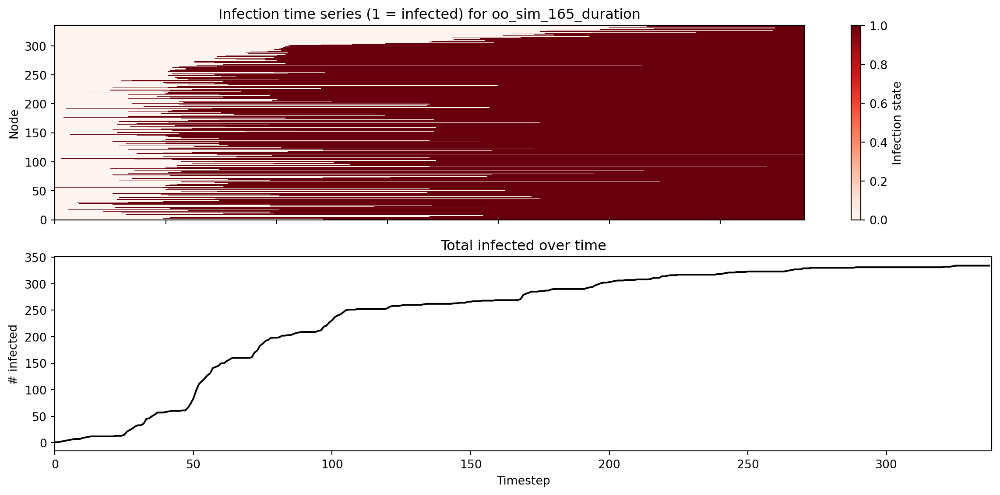
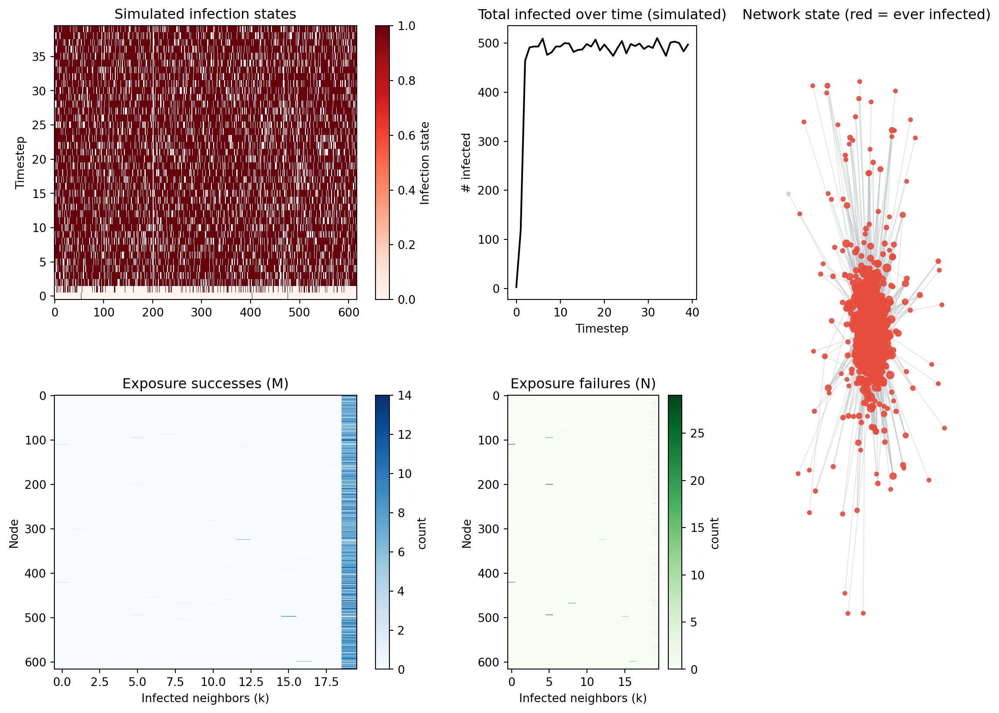
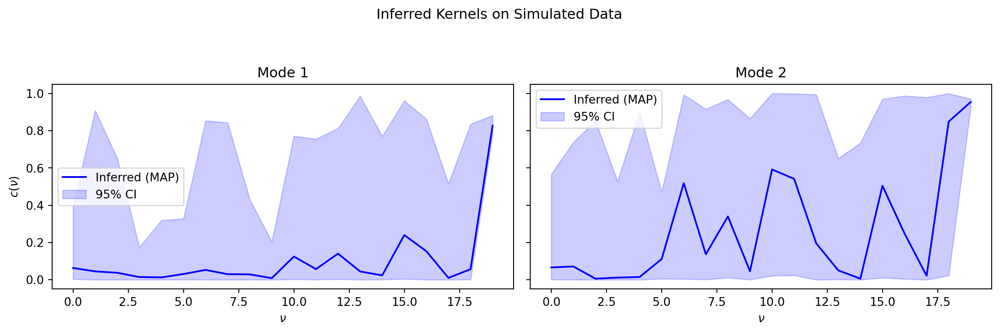
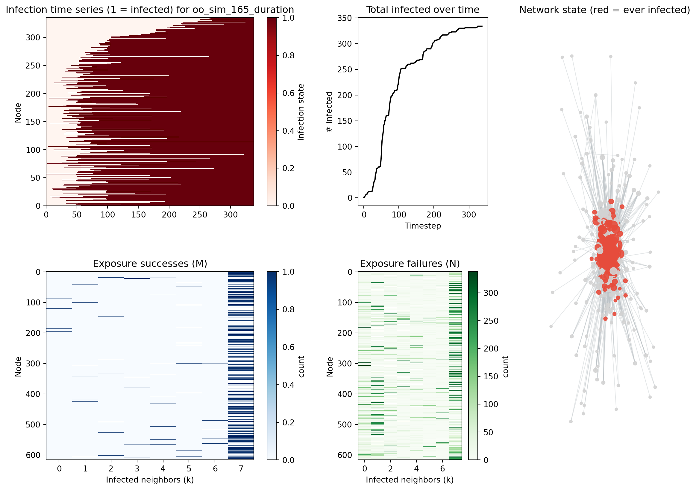

/Users/willthompson/Documents/CSDS/side_projects/heterogeneous-infection-kernels/.venv/lib/python3.13/site-packages/tqdm/auto.py:21: TqdmWarning: IProgress not found. Please update jupyter and ipywidgets. See https://ipywidgets.readthedocs.io/en/stable/user_install.html
from .autonotebook import tqdm as notebook_tqdmStan Inference Demo
This notebook demonstrates how to load Operation Outbreak simulation data (specifically Sim 165) from the database and run a Stan inference model.
Setup and Imports
Okay so we
Load Data (Sim 165)
We fetch the metadata for Simulation 165 and decompress the \(M\) (success) and \(N\) (failure) exposure matrices.
Loaded Run: oo_sim_165_durationStan Model Sampling
Code
# Sample from model
print("Starting sampling...")
fit = model.sample(
data=data,
seed=37,
chains=1,
iter_sampling=100,
iter_warmup=20,
show_progress=True,
show_console=True
)
print("Sampling complete.")
print(fit.summary())10:08:40 - cmdstanpy - INFO - Chain [1] start processingStarting sampling...
Chain [1] method = sample (Default)
Chain [1] sample
Chain [1] num_samples = 100
Chain [1] num_warmup = 20
Chain [1] save_warmup = false (Default)
Chain [1] thin = 1 (Default)
Chain [1] adapt
Chain [1] engaged = true (Default)
Chain [1] gamma = 0.05 (Default)
Chain [1] delta = 0.8 (Default)
Chain [1] kappa = 0.75 (Default)
Chain [1] t0 = 10 (Default)
Chain [1] init_buffer = 75 (Default)
Chain [1] term_buffer = 50 (Default)
Chain [1] window = 25 (Default)
Chain [1] save_metric = false (Default)
Chain [1] algorithm = hmc (Default)
Chain [1] hmc
Chain [1] engine = nuts (Default)
Chain [1] nuts
Chain [1] max_depth = 10 (Default)
Chain [1] metric = diag_e (Default)
Chain [1] metric_file = (Default)
Chain [1] stepsize = 1 (Default)
Chain [1] stepsize_jitter = 0 (Default)
Chain [1] num_chains = 1 (Default)
Chain [1] id = 1 (Default)
Chain [1] data
Chain [1] file = /var/folders/d8/_nh0kys17c383rmrhqbdm9y00000gn/T/tmpneth6y1_/64vd89bc.json
Chain [1] init = 2 (Default)
Chain [1] random
Chain [1] seed = 37
Chain [1] output
Chain [1] file = /var/folders/d8/_nh0kys17c383rmrhqbdm9y00000gn/T/tmpneth6y1_/model_JGY-modfzjhkefq/model_JGY-mod-20251203100840.csv
Chain [1] diagnostic_file = (Default)
Chain [1] refresh = 100 (Default)
Chain [1] sig_figs = -1 (Default)
Chain [1] profile_file = profile.csv (Default)
Chain [1] save_cmdstan_config = false (Default)
Chain [1] num_threads = 1 (Default)
Chain [1]
Chain [1]
Chain [1] Gradient evaluation took 0.001047 seconds
Chain [1] 1000 transitions using 10 leapfrog steps per transition would take 10.47 seconds.
Chain [1] Adjust your expectations accordingly!
Chain [1]
Chain [1]
Chain [1] WARNING: There aren't enough warmup iterations to fit the
Chain [1] three stages of adaptation as currently configured.
Chain [1] Reducing each adaptation stage to 15%/75%/10% of
Chain [1] the given number of warmup iterations:
Chain [1] init_buffer = 3
Chain [1] adapt_window = 15
Chain [1] term_buffer = 2
Chain [1]
Chain [1] Iteration: 1 / 120 [ 0%] (Warmup)
Chain [1] Informational Message: The current Metropolis proposal is about to be rejected because of the following issue:
Chain [1] Exception: normal_lpdf: Scale parameter is 0, but must be positive! (in 'model_JGY-mod.stan', line 95, column 12 to column 56)
Chain [1] If this warning occurs sporadically, such as for highly constrained variable types like covariance matrices, then the sampler is fine,
Chain [1] but if this warning occurs often then your model may be either severely ill-conditioned or misspecified.
Chain [1]
Chain [1] Iteration: 21 / 120 [ 17%] (Sampling)10:08:46 - cmdstanpy - INFO - Chain [1] done processing
10:08:46 - cmdstanpy - WARNING - Non-fatal error during sampling:
Exception: normal_lpdf: Scale parameter is 0, but must be positive! (in 'model_JGY-mod.stan', line 95, column 12 to column 56)Chain [1] Iteration: 120 / 120 [100%] (Sampling)
Chain [1]
Chain [1] Elapsed Time: 0.666 seconds (Warm-up)
Chain [1] 4.742 seconds (Sampling)
Chain [1] 5.408 seconds (Total)
Chain [1]
Chain [1]
Sampling complete.
Mean MCSE StdDev MAD \
lp__ -3217.520000 5.330400 30.087300 25.752800
pi[1,1] 0.433305 0.025273 0.274817 0.334239
pi[1,2] 0.566695 0.025273 0.274817 0.334239
pi[2,1] 0.210415 0.013608 0.160645 0.195730
pi[2,2] 0.789585 0.013608 0.160645 0.195730
... ... ... ... ...
alpha_k_rep[2,8,996] -2.355940 0.973316 10.532400 9.910170
alpha_k_rep[2,8,997] -2.955130 1.027400 9.209840 8.828710
alpha_k_rep[2,8,998] -1.106020 1.020830 10.348300 8.598150
alpha_k_rep[2,8,999] -2.291000 0.851649 8.129360 7.202210
alpha_k_rep[2,8,1000] -2.608440 1.057680 9.789650 8.450300
5% 50% 95% ESS_bulk \
lp__ -3262.950000 -3219.930000 -3164.200000 31.7545
pi[1,1] 0.018482 0.415129 0.897394 115.0370
pi[1,2] 0.102606 0.584871 0.981518 115.0370
pi[2,1] 0.007017 0.191749 0.475143 108.4490
pi[2,2] 0.524857 0.808251 0.992983 108.4490
... ... ... ... ...
alpha_k_rep[2,8,996] -19.301200 -3.057190 14.778100 117.2310
alpha_k_rep[2,8,997] -16.030700 -3.615940 11.471400 74.4955
alpha_k_rep[2,8,998] -17.925500 -1.155830 16.427600 103.1350
alpha_k_rep[2,8,999] -15.006500 -2.903900 12.721400 81.1297
alpha_k_rep[2,8,1000] -16.308300 -3.486260 13.181400 115.7400
ESS_tail R_hat
lp__ 44.5810 1.019920
pi[1,1] 50.0000 1.037400
pi[1,2] 50.0000 1.037540
pi[2,1] 78.3393 0.991857
pi[2,2] 78.3393 0.991545
... ... ...
alpha_k_rep[2,8,996] 101.7700 0.999324
alpha_k_rep[2,8,997] 50.0000 1.035910
alpha_k_rep[2,8,998] 92.5822 1.001470
alpha_k_rep[2,8,999] 50.8738 1.002970
alpha_k_rep[2,8,1000] 52.4503 0.990124
[27141 rows x 10 columns]```{python}
#| label: fig-mode-posterior-fit
#| fig-cap: "Sampled posterior distribution for kernel modes compared to ground truth."
alpha_k_rep = fit.stan_variable('alpha_k_rep')
alpha_k = fit.stan_variable('alpha_k')
records = []
for sample_idx in range(100): # Changed 'sample' to 'sample_idx' to avoid conflict with `fit.stan_variable('sample')`
for _mode in [0, 1]:
for nu in range(28):
records.append({
"sample": sample_idx,
"k": _mode,
"nu": nu,
"val": alpha_k[sample_idx, _mode, nu],
"kind": 'inferred'
})
for replicate in range(1000):
records.append({
"sample": sample_idx,
"k": _mode,
"nu": nu,
"val": alpha_k_rep[sample_idx, _mode, nu, replicate],
"kind": 'replicate'
})
df = pd.DataFrame.from_records(records)
df_rep = df.query("kind == 'replicate'")
df_inf = df.query("kind == 'inferred'")
``````{python}
#| label: fig-mode-posterior-fit-plot
#| fig-cap: "Inferred Kernel Functions (MAP and 95% CI) vs. Ground Truth."
# alpha_k_samples has shape (num_samples, K, kmax)
alpha_k_samples = fit.stan_variable('alpha_k')
# Calculate MAP estimate (mean) and 95% credible intervals for alpha_k
alpha_k_mean = np.mean(alpha_k_samples, axis=0) # shape (K, kmax)
alpha_k_lower = np.percentile(alpha_k_samples, 2.5, axis=0) # shape (K, kmax)
alpha_k_upper = np.percentile(alpha_k_samples, 97.5, axis=0) # shape (K, kmax)
# Transform to 'c' scale using expit
c_k_mean = expit(alpha_k_mean)
c_k_lower = expit(alpha_k_lower)
c_k_upper = expit(alpha_k_upper)
# Plotting
fig, axs = plt.subplots(1, data['K'], figsize=(10, 5), sharex=True, sharey=True)
if data['K'] == 1: # Handle single mode case for axs indexing
axs = [axs]
if 'c1' not in locals():
c1 = np.zeros(kmax)
if 'c2' not in locals():
c2 = np.zeros(kmax)
for mode_idx in range(data['K']):
ax = axs[mode_idx]
# Plot MAP estimate
ax.plot(range(kmax), c_k_mean[mode_idx, :], label=f'Inferred Kernel {mode_idx+1} (MAP)', color='blue')
# Plot credible interval
ax.fill_between(range(kmax), c_k_lower[mode_idx, :], c_k_upper[mode_idx, :],
color='blue', alpha=0.2, label=f'95% CI')
# Plot ground truth c1 and c2
ax.plot(range(kmax), c1[:kmax], label='True Kernel 1', color='gray', linestyle='dashed')
ax.plot(range(kmax), c2[:kmax], label='True Kernel 2', color='red', linestyle='dashed') # Assuming c2 is also relevant
ax.set_title(f"Mode {mode_idx+1}")
ax.set_xlabel(r"$\nu$")
ax.legend()
axs[0].set_ylabel(r"$c(\nu)$")
plt.suptitle("Inferred Kernel Functions (MAP and 95% CI) vs. Ground Truth")
plt.tight_layout(rect=[0, 0.03, 1, 0.95]) # Adjust layout to prevent suptitle overlap
plt.show()
```Infection Time Series Visualization

Simulated Dynamics Sanity Check
Generate synthetic M/N from a simulated contagion on the same network and run the Stan inference to verify the pipeline.
/var/folders/d8/_nh0kys17c383rmrhqbdm9y00000gn/T/ipykernel_57873/1622505341.py:93: UserWarning: This figure includes Axes that are not compatible with tight_layout, so results might be incorrect.
plt.tight_layout()
10:08:49 - cmdstanpy - INFO - CmdStan start processing
10:08:49 - cmdstanpy - INFO - Chain [1] start processing
10:09:01 - cmdstanpy - INFO - Chain [1] done processing
10:09:01 - cmdstanpy - WARNING - Non-fatal error during sampling:
Exception: normal_lpdf: Location parameter[3] is inf, but must be finite! (in 'model_JGY-mod.stan', line 95, column 12 to column 56)
Consider re-running with show_console=True if the above output is unclear! Mean MCSE StdDev MAD \
lp__ -3104.420000 5.707850 24.070700 24.084800
pi[1,1] 0.693804 0.024304 0.210125 0.191989
pi[1,2] 0.306196 0.024304 0.210125 0.191989
pi[2,1] 0.799359 0.021344 0.196725 0.132796
pi[2,2] 0.200641 0.021344 0.196725 0.132797
... ... ... ... ...
alpha_k_rep[2,20,96] -3.254620 0.450657 3.689130 2.418540
alpha_k_rep[2,20,97] -2.807110 0.684808 3.950040 2.227410
alpha_k_rep[2,20,98] -3.492100 0.486795 3.627200 3.175890
alpha_k_rep[2,20,99] -3.314960 0.564458 3.796200 2.849750
alpha_k_rep[2,20,100] -2.329800 0.722213 4.439350 3.978490
5% 50% 95% ESS_bulk \
lp__ -3140.810000 -3103.190000 -3066.110000 11.7150
pi[1,1] 0.364624 0.731245 0.958373 84.9485
pi[1,2] 0.041627 0.268755 0.635376 84.9485
pi[2,1] 0.403679 0.854618 0.985671 84.9485
pi[2,2] 0.014329 0.145381 0.596321 84.9485
... ... ... ... ...
alpha_k_rep[2,20,96] -9.057900 -3.513140 3.394790 72.7829
alpha_k_rep[2,20,97] -10.481700 -2.525430 1.713390 11.6906
alpha_k_rep[2,20,98] -9.697600 -3.571890 1.921800 51.9981
alpha_k_rep[2,20,99] -10.350300 -2.652630 1.759500 28.5958
alpha_k_rep[2,20,100] -9.463370 -2.265930 5.116130 51.9552
ESS_tail R_hat
lp__ 25.0000 1.084640
pi[1,1] 25.0000 1.039930
pi[1,2] 25.0000 1.040230
pi[2,1] 33.2501 0.994892
pi[2,2] 33.2501 0.994892
... ... ...
alpha_k_rep[2,20,96] 58.4202 0.999343
alpha_k_rep[2,20,97] 25.0000 1.082050
alpha_k_rep[2,20,98] 25.0000 1.100470
alpha_k_rep[2,20,99] 25.0000 1.031690
alpha_k_rep[2,20,100] 25.0000 0.991167
[29997 rows x 10 columns]
Static Infection Snapshot
/var/folders/d8/_nh0kys17c383rmrhqbdm9y00000gn/T/ipykernel_57873/628267035.py:88: UserWarning: This figure includes Axes that are not compatible with tight_layout, so results might be incorrect.
plt.tight_layout()